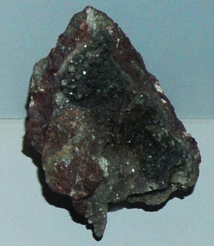

|

| CuBiS2
This sample of emplectite is displayed in the Smithsonian Museum of Natural History. Emplectite is an sulfide mineral of copper and bismuth with the composition CuBiS2 . This sample is about 5x7 cm and is from Daniel mine, Schneeberg, Sachsen, Germany.
|